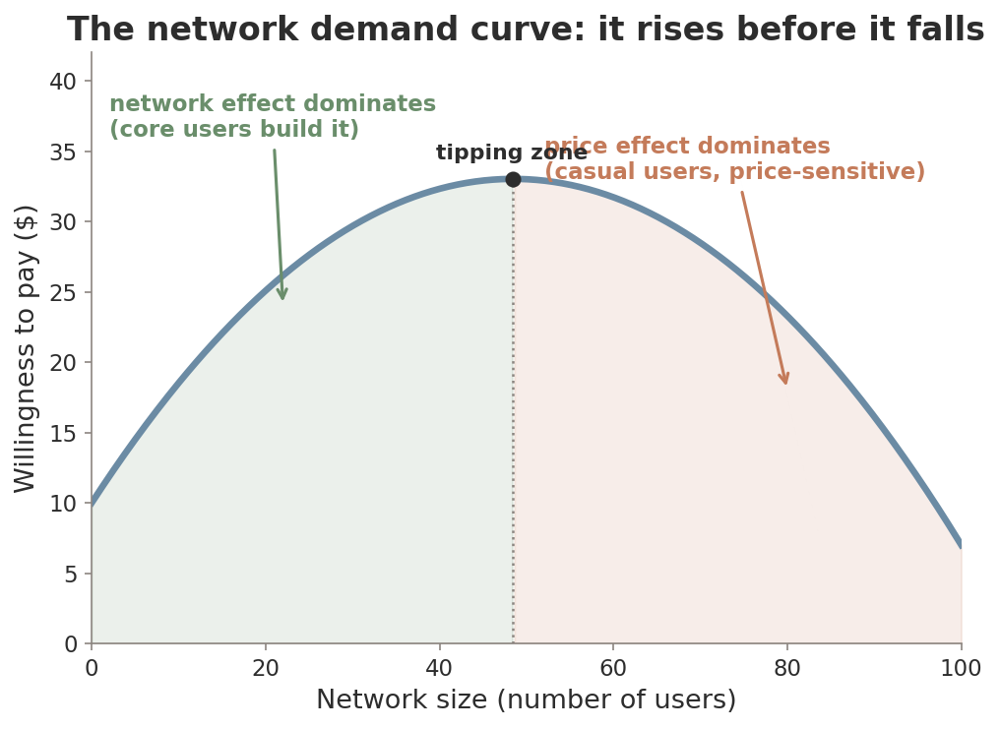
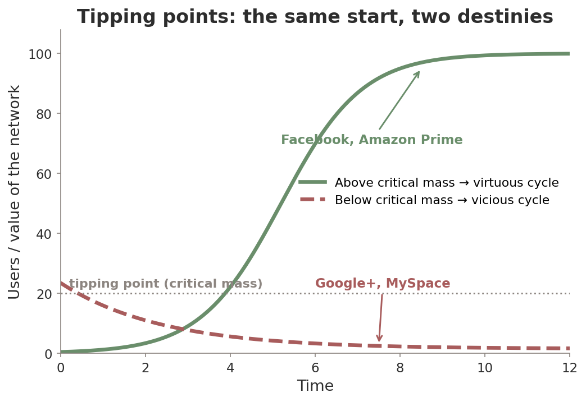

ECON 1116 • Principles of Microeconomics • Chapter 19
Platforms, Networks & the Digital Economy
In January 2025, TikTok went dark. 170 million Americans — half the country — lost their feeds overnight. Reels and Shorts were one tap away. So why couldn’t anyone just switch?
Dr. Richeng Piao
Department of Economics
Northeastern University
Learning Objectives
19.1
Explain network effects and how they create tipping points
19.2
Analyze two-sided platforms & the chicken-and-egg problem
19.3
Evaluate platform pricing — the take rate, subsidies, freemium
19.4
Assess network strategies — teasers, lock-in, versioning, bundling
19.5
Evaluate data as a competitive input — the data flywheel
19.6
Analyze how we regulate digital platforms — and the trade-offs
Quick Recall — Chapters 11, 12 & 13
In Chapter 11 a monopolist had market power. Name one source of it — what kept rivals out?
In Chapter 12 we said leaving Apple’s ecosystem was costly. What did we call those costs?
Why do you use the same messaging app as your friends, even if a “better” one exists?
Discuss with your neighbor — 90 seconds.
Hook — The Night TikTok Went Dark
January 2025: a Supreme Court ruling forced TikTok offline in the U.S. For a few hours, the feeds vanished.
170M
U.S. users — half the country
2
near-identical rivals: Reels, Shorts
$14B
price Oracle-led group paid for U.S. ops
~0
who fully switched apps
Your feed wasn’t an algorithm — it was a social graph of creators, jokes, and communities that can’t be rebuilt overnight. That stickiness is a network effect, and it’s the engine of the whole digital economy.
Section 1 · LO 19.1
Network Effects: Why Size Matters
The value of a product depends on how many other people use it.
Two Flavors of Network Effect
Network effect — the value of a good to each user rises as more people use it. (Older texts: “network externality.”)
Direct — same side
Users benefit from more users like them. Every friend who joins WhatsApp makes it more useful to you.
Cross-side (indirect)
One side benefits from the other side. More Airbnb hosts attract more guests — and vice versa.
A gaming console has both: more players (direct) and more developers (cross-side).
Spotting the Effect in the Wild
WhatsApp — pure direct. Your experience improves every time a friend joins.
Airbnb — pure cross-side. Hosts don’t want more hosts; they want more guests.
PlayStation — both. More players to match with, more developers making games.

The Network Demand Curve: It Rises First

Upward part: when the network is small, each new user adds a lot. Core adopters build it. Network effect > price effect.
Downward part: once mature, extra users add little. Casual, price-sensitive users join. Price effect > network effect.
This is why platforms start free, then raise prices — the VR headset story: $300 enthusiasts first, casual users later.
Metcalfe’s Law: Value Compounds

Metcalfe’s Law: value grows with the square of users — n people make n(n−1)/2 possible connections.
Double the users → roughly 4× the value. That convexity is what makes a leader pull away.
The critique (Odlyzko–Tilly): you don’t talk to everyone — value is closer to n·log n. Still super-linear.
Tipping Points: Virtuous vs. Vicious

Virtuous cycle: past the tipping point, more users → more value → more users. Facebook: dorm room (2004) → 3 billion.
Vicious cycle: below it, leavers reduce value → more leave. Google+ shut down 2019 despite Google’s billions.
Same feedback loop — the sign flips at critical mass. Often winner-take-all.
Misconception: “The Best Product Always Wins”
In network markets, the product that reaches the tipping point first often wins — even if a rival is technically better.
QWERTY (1870s)
Designed to slow typists down and stop jams — still dominates 150 years later. Pure lock-in.
Tesla NACS (2025)
Won the U.S. charging standard not on merit but on installed base: 7,300 stations, automakers with 75% of EVs adopted it.
Path dependence: history and timing, not just quality, decide the winner.
Your Turn — Will AI Chatbots Tip?
ChatGPT’s share fell from 87% → 68% in a year as Gemini and Claude grew. Users freely run several models for different tasks. What does this most suggest?
Section 2 · LO 19.2
Platforms & Two-Sided Markets
If the product is free, where does the money come from?
Platform vs. Pipeline
Platform — a business that creates value by matching two or more user groups, not by producing a good itself. An intermediary, not a maker.
Pipeline (traditional)
A carmaker buys steel → builds cars → sells them. Value flows one direction.
Platform (Uber)
Owns no cars, employs no drivers. It matches riders and drivers — scale with few staff.
Coase (Ch 9): firms exist to cut transaction costs. Platforms take that to the extreme — cut the cost of finding and trusting a match.
Price Structure Beats Price Level

Rochet & Tirole (Tirole, 2014 Nobel): in a two-sided market, who pays matters more than how much.
Subsidize the price-sensitive side (free search, free maps), extract from the side that gets measurable value (advertisers).
Same logic: nightclub “ladies’ night,” credit-card rewards funded by 2–3% merchant fees.
The Chicken-and-Egg Problem
Riders won’t come without drivers; drivers won’t come without riders. A platform needs both sides at once — but each waits for the other.
Subsidize a side
Uber paid drivers guaranteed hourly rates before riders showed up.
Borrow a network
Threads launched off Instagram’s 2B users → 275M in months.
Start tiny
Airbnb began renting air mattresses in the founders’ apartment.
Solve the coordination problem and the cross-side flywheel takes over.
Lock-In: Why You Don’t Leave
Sellers on Amazon
Review history & ranking don’t transfer. Running on two marketplaces (multi-homing costs) is rarely worth it — so they stay despite rising fees.
Consumers (psychological)
The iMessage “green bubble” — a trivial color cue — creates real social pressure to stay in Apple’s world.
Switching costs (Ch 12) are the glue that turns a network lead into durable market power.
Section 3 · LO 19.3
Platform Pricing & the Take Rate
The toll the platform charges on every match it makes.
The Take Rate: The Platform’s Cut

Take rate — the share of each transaction the platform keeps. Also: commission, rake.
Distinct from GMV (Gross Merchandise Volume = total value of transactions processed).
Amazon’s ~45% bundles commission + fulfillment + mandatory ads — far above its posted fee. Take rates rise once both sides are locked in.
Four Ways Platforms Price
Subsidize-and-extract
Free for one side, paid for the other. Google: consumers free, advertisers pay.
Freemium
Free basic tier builds the network & data; premium at $11.99 (Spotify, near-zero MC).
Peak-load (surge)
Higher prices at peak demand. Uber surge raised welfare +2.15% (Castillo 2025).
Intertemporal
$70 game now for the impatient → $30 later for the patient. Time-based price discrimination.
All four are variations on price discrimination (Ch 11) across sides, users, or time.
The Streaming Wars Are Platform Economics
Subsidize-and-extract: Disney+ launched at $6.99 (below cost) to grab subscribers → raised to $18.99 by 2025.
Versioning: Netflix runs 3 tiers ($7.99 ads / $17.99 / $24.99) — the ad tier makes it a two-sided market too.
Bundling: Disney+/Hulu/ESPN+ and Comcast StreamSaver cut churn by packaging services.
Lock-in: Netflix +$1 to $18.99 with record-low 2.17% churn — your watchlist doesn’t transfer.
The oligopoly of Chapter 13 grew up into a set of locked-in content platforms.
Section 4 · LO 19.4
Competing in Network Markets
How do you build a new network — or defend an old one?
Lock-In: Defending the Castle
Lock-in — high switching costs keep users even when a better option exists. A moat and a source of market power.
Switch from iPhone to Android and you lose iMessage, iCloud photos, Apple Watch pairing, purchased apps. Each Apple device you own raises the next switch’s cost.
The DOJ’s 2024 suit alleges Apple deliberately degrades cross-platform messaging to deter switching.
Versioning: A Menu That Sorts Buyers
Versioning — offer tiers at different prices so buyers self-select by willingness to pay. (Second-degree price discrimination, Ch 11.)
Salesforce Basic
$25
/user/month
Professional
$80
/user/month
Enterprise
$165
/user/month
The marginal cost of the premium version is ~$0 — the price gap is pure market segmentation.
Bundling: Sell Them Together

Aisha: A=$15, B=$5. Kaito: A=$6, B=$14. Each values the pair at $20.
Best separate prices earn $29. One bundle at $20 → both buy → $40.
Bundling works when tastes diverge — it averages out willingness to pay. It fails when tastes are aligned.
Case Study: The Browser Wars
1995 — Netscape
dominant
IE bundled with Windows (90%+ of PCs)
leverage
~3 years later
IE > 90%
A platform that controls one layer (the OS) can leverage it into an adjacent market (the browser) via bundling. DOJ sued 1998; 2001 settlement forced API-sharing.
Exactly the concern driving today’s cases against Google and Apple — and the EU’s interoperability rules.
Your Turn — Name the Strategy
A new streaming service offers 3 free months, then bets you won’t cancel because your watchlist and profiles now live there. Which two ideas are at work?
Section 5 · LO 19.5
Data as an Economic Input
When the service is free, you — your data — are the product.
The Data Flywheel
Data flywheel — more users → more data → better algorithms → more users. A self-reinforcing loop.
Meta, Q2 2025: advertiser net-dollar retention hit 130% (the average advertiser spent 30% more) as ML targeting improved on more data.
~$170B in 2025 ad revenue — nearly all from monetizing user data.

Data Moats — and Their Limits
Economies of scale
Building a model costs a fortune; processing one more user’s data costs almost nothing. Favors incumbents — a data moat.
Diminishing returns
The 10-millionth search query improves Google far less than the 10-thousandth. Past some scale, the moat thins.
Data moat — proprietary data that improves the product and raises entry barriers. Powerful, but not infinite.
Data Becomes a Commodity
As AI models hunger for training data, communities discover they’re sitting on a goldmine:
$203M cumulative licensing — ~$60M/yr from Google, ~$70M/yr from OpenAI for 17 years of human posts.
Stack Overflow
Traffic fell 76% as AI assistants replaced it — so it pivoted to licensing its verified knowledge base.
The communities built deep data moats — now among the most valuable inputs of the AI era.
Privacy as a Cost — & the New Antitrust
Privacy is a real cost
Personalized service vs. surveillance. FTC (2024–25): 250+ firms used surveillance pricing. Users underweight the long-run cost of data extraction.
Economist at Work — Lina Khan
2017 Yale paper: low prices can hide market power. As FTC chair (2021), she sued Amazon & won a $2.5B Prime settlement.
A 2025 Cowles paper shows a monopolist platform systematically distorts privacy — the case for “privacy by default.”
Section 6 · LO 19.6
Regulating the Digital Economy
How do you regulate a monopolist that gives its product away free?
The New Antitrust: US v. Google
Aug 2024 — the finding
Google is an illegal monopolist: 90% of search held by an “illegal web of exclusionary contracts” — $26B+ to Apple alone to stay the default.
Sep 2025 — the remedy
No more exclusive defaults; share the search index & click data with rivals; rules extend to the Gemini AI app.
The court moved preemptively into AI — stopping a search monopoly from becoming an AI monopoly. A second 2025 ruling found Google also monopolized ad-tech.
The European Approach: DMA & DSA
Ex ante regulation: the DMA (2024) names big platforms “gatekeepers” and sets rules before harm — not after a court case.
Apple forced to allow third-party app stores & alt payments. April 2025 fines: Apple €500M, Meta €200M. Cumulative EU tech fines > €6B.
US = ex post litigation (slow, case-by-case). EU = ex ante rules (fast, but risks over-regulating).

History Rhymes: AT&T & Microsoft
AT&T (1984)
Controlled ~80% of U.S. landlines. Structural breakup + mandated interconnection → competition, lower prices, long-distance vanished as a market.
Microsoft (1998–2001)
Leveraged Windows to crush Netscape. Behavioral remedy: share APIs, accept oversight — the model for the Google remedy today.
Essential facility / interconnection: force the dominant firm to grant rivals access to shared infrastructure.
The Regulation Dilemma
Every fix has a cost: break up a platform and you may destroy the network value; force data-sharing and you may erode privacy; cap prices and you get shortages (Ch 7).
Markets self-correct? MySpace, Friendster, Netscape all fell. Contestability + new entry may discipline platforms.
Or too slow? Network effects + switching costs + data moats may make self-correction too rare to wait for.
Misconception: “Big tech are natural monopolies — just break them up.” Network effects create winner-take-all tendencies, not inevitability.
Appendix: The Economics of AI Products

Extreme fixed cost: GPT-4 ~$78M, Gemini ~$191M, Anthropic $12B+ in cumulative compute.
Near-zero marginal cost: inference fell 280× (Nov 2022 → Oct 2024). Train once, serve forever.
High barrier + infinite scale → natural oligopoly. But open-source (Llama, Gemma) is a public good (Ch 17) that erodes the moat.
Key Takeaways
1. Network effects make value rise with users, creating tipping points & winner-take-all — but not always.
2. Platforms are two-sided markets; optimal pricing subsidizes one side, extracts from the other.
3. The take rate is the platform’s cut — and it rises as both sides get locked in.
4. Teasers, lock-in, versioning & bundling build and defend network positions.
5. Data flywheels are self-reinforcing moats — powerful, but with diminishing returns.
6. Regulating platforms means balancing network value against unchecked power — no clean answer.
That’s the course. From a single price in Chapter 4 to planetary-scale platforms — the same tools, all the way up.
Connections
Building On
- Ch 9: Coase, economies of scale, ~0 MC
- Ch 11: Market power & price discrimination
- Ch 12: Switching costs & lock-in
Pulling In
- Ch 13: Streaming oligopoly → platforms
- Ch 16/17: Externalities & public goods (open AI)
- Ch 18: Dark patterns & the Iliad Flow
One idea closes the book: markets run on connection — and connection, once it concentrates, becomes power.
Exit Ticket
Under Metcalfe’s Law, a network’s value is V = k · n(n−1)/2 with k = $0.10 per connection.
Compute V for n = 100 and n = 1,000. When users grow 10×, value grows roughly how many times? One line of work.
Submit on Canvas. 3 minutes.